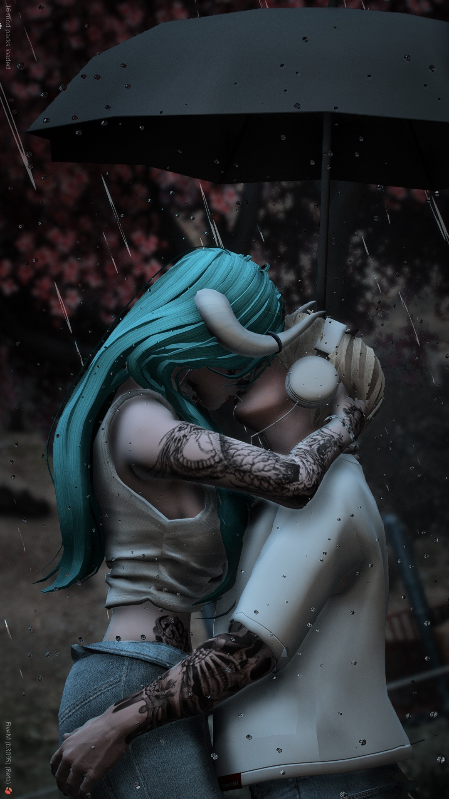

Nur Liyana Jasmine
spawned 02 . 12 . 2025
Sayang, you told me to write about how much I love you, and about how I never expected an angel to spawn into my boring depressed life. So here it is properly, and not rushed into a text at 3am.
I want to say this clearly: I wasn't looking for you. That is the honest part. I had my routine, my games and my late nights, and I had quietly accepted that this was just how it was going to be. I wasn't waiting for anyone, because I didn't think anyone was coming.
And then there was FiveM. Although calling it a spawn is not quite fair, sayang. You had been playing alot longer before I even started in February. You were already there. I was the one who turned up late.
We spent months in the same negara, on the same server, somehow never once crossing paths. Then one night in November, we finally did. There was nothing at all to prepare me for you.

The first time I saw you in real life was at KLIA. A McDonald's bag between us, you pointing at planes I genuinely could not see because it was pitch black. By then I already knew, but that was the night it stopped being something on a screen. I just knew I didn't want the night to end.
One day my life was grey, and the next there was colour in it. It has not left since.
- You made 3am the best part of my day, and made me hate the part where one of us has to hang up.
- You built a cherry blossom house with me and named two axolotls after us, and somehow that felt like a real home.
- You made me care if someone got home safe, if someone ate, if someone slept. I never used to think about anyone like that.
- You made an ordinary day something I look forward to, just because you are in it.
You are not the easy kind of love, and I am glad about that. You feel everything loudly. You tell me straight when I have hurt you. You cry when you are tired and then say sorry for things that were never your fault. That is what makes you real to me instead of an idea I made up in my head.
I love you when you are soft and I love you when you are difficult. I love you at your happiest, and I love you at 1am when you are convinced that you are the problem. You have never been the problem, sayang. You are the best thing that has ever loaded into my life.
You called my life boring and depressing before you, and honestly you were right. You are the reason it is not that anymore. Not because you fixed me, but because you showed up and stayed, even on the nights it would have been easier not to.
I love you so so much, Nur Liyana Jasmine.
Yours, always. Khairul
P.S. You told me to make you go wow.
I hope this did, sayangg. 🤍